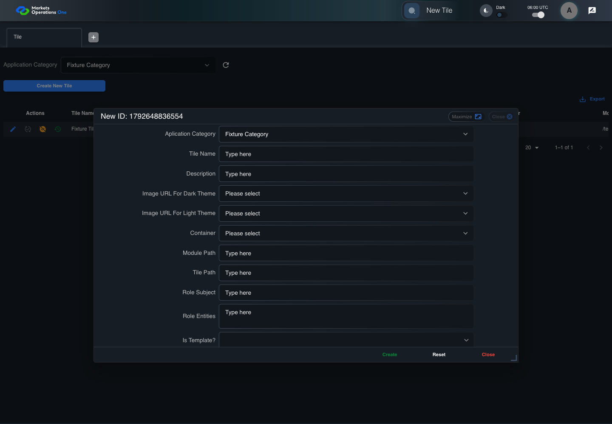

UI-ADM-FLD-007 actual administration UI with step evidence
PASS · application/run-050/ui-adm-fld-007-actual-administration-ui-with-step-evidence-e0031eee3495-attempt-1 · ACTUAL_APPLICATION_LOCAL_SERVICES
Actual current React administration screens. Controlled browser login supplies UI-ADMIN-01 and TEST_OWNER, or the declared SUPER_USER. Controlled BFF routes return the case-declared records. Other controlled saves persist submitted field values. This run establishes frontend handling only. It does not execute BFF validation, storage, audit generation, or authorization.
2026-10-22T06:00:33.796Z to 2026-10-22T06:00:38.807Z
Assertions and result · Artifact manifest · Exact run inputs and source hashes
Result SHA-256:2fffa7afe75d5c0075a0db69acbc7a2ebe60ec6628569f14f48ef0551823a992Machine observations
- ui-origin-admin-requests.json
d2ad9d9fcd89989575f947cf741b23d199cf7e43f8e2a57da0ddbbaf03e3e9f4
Screenshot capture: CAPTURED. Named frames: 8.
Step screenshot evidence: COMPLETE. 7/7 canonical steps have execution screenshots.
Canonical step timeline
Given Admin A is authenticated as fixture UI-ADMIN-01 with the case-specific permissions
Execution: PASSED.1. step-01 Visible state after step 1: Given Admin A is authenticated as fixture UI-ADMIN-01 with the case-specific permissions
2026-10-22T06:00:35.462Z · 1440×1000
Step: /Users/lushevol/code/github/ratan-release-impact/workbench/tasks/ui-test-coverage-20261022/test-cases.md:9292
SHA-256:5b18e61c9d4c5c1f0cee1300bdcda34b1418a25c1a97509d35e55f2dac5d5abcAnd UI-ADMIN-01 has a new Tile form; create returns an empty data object {}
Execution: PASSED.2. step-02 Visible state after step 2: And UI-ADMIN-01 has a new Tile form; create returns an empty data object {}
2026-10-22T06:00:37.007Z · 1440×1000
Step: /Users/lushevol/code/github/ratan-release-impact/workbench/tasks/ui-test-coverage-20261022/test-cases.md:9293
SHA-256:c8414731c161b213b3e4398e5748b89556737873d39b3bcdf1032a9d6ddcfa16When the declared controlled field clock advances by 300 milliseconds
Execution: PASSED.
3. step-03 Visible state after step 3: When the declared controlled field clock advances by 300 milliseconds
2026-10-22T06:00:37.252Z · 1440×1000
Step: /Users/lushevol/code/github/ratan-release-impact/workbench/tasks/ui-test-coverage-20261022/test-cases.md:9294
SHA-256:743e5f7cf28f03abc34a82d2486c47191c7707f8aa9d60f5680737e7ff86273cAnd Admin A clicks button named "Create" inside the new-record dialog inside the "Tile" administration tabpanel
Execution: PASSED.4. step-04 Visible state after step 4: And Admin A clicks button named "Create" inside the new-record dialog inside the "Tile" administration tabpanel
2026-10-22T06:00:37.636Z · 1440×1000
Step: /Users/lushevol/code/github/ratan-release-impact/workbench/tasks/ui-test-coverage-20261022/test-cases.md:9295
SHA-256:7ebbff2c4bb2d2b1117f71491b4a6652ec0393c585c4d67d129dd64269eb35dcThen dialog with source identity "new ID: <captured fixture timestamp>" inside the "Tile" administration tabpanel is visible
Execution: PASSED.5. step-05 Visible state after step 5: Then dialog with source identity "new ID: <captured fixture timestamp>" inside the "Tile" administration tabpanel is visible
2026-10-22T06:00:37.785Z · 1440×1000
Step: /Users/lushevol/code/github/ratan-release-impact/workbench/tasks/ui-test-coverage-20261022/test-cases.md:9296
SHA-256:cdb95b900837caad13316f7883e01c2a9ba49c07ed5db07a5c3cd53d0a565e7fAnd the data row count in data grid with source identity "administration records" inside the "Tile" administration tabpanel equals its recorded pre-action count
Execution: PASSED.6. step-06 Visible state after step 6: And the data row count in data grid with source identity "administration records" inside the "Tile" administration tabpanel equals its recorded pre-action count
2026-10-22T06:00:37.924Z · 1440×1000
Step: /Users/lushevol/code/github/ratan-release-impact/workbench/tasks/ui-test-coverage-20261022/test-cases.md:9297
SHA-256:0b1e5eed63567e479c43791d92dba0a09cb48d370965891820ee7af2d19a2146And no new row for the declared fixture tile exists in data grid with source identity "administration records" inside the "Tile" administration tabpanel
Execution: PASSED.7. step-07 Visible state after step 7: And no new row for the declared fixture tile exists in data grid with source identity "administration records" inside the "Tile" administration tabpanel
2026-10-22T06:00:38.026Z · 1440×1000
Step: /Users/lushevol/code/github/ratan-release-impact/workbench/tasks/ui-test-coverage-20261022/test-cases.md:9298
SHA-256:805483e92cf71bb7a040a6dd0dbf6759bbc492630f8be5456e1795c958ce65b8
Additional named frames
Screenshots establish visible state only. Assertions and traces support functional claims.